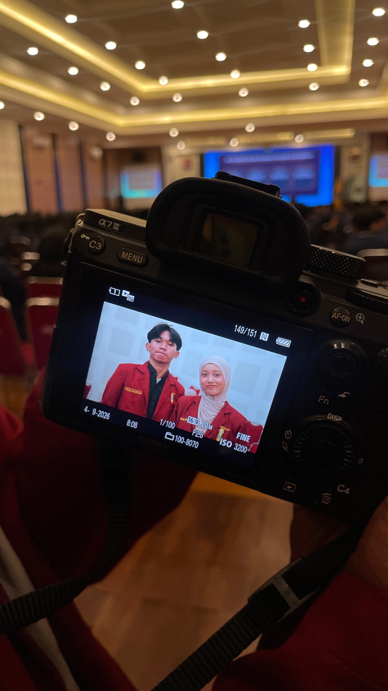

The little talks
From random little things to everything at once. Somehow, talking to you always feels like coming home.
SOME THINGS ARE WORTH THE WAIT
Ada satu tanggal kecil yang menyimpan banyak cerita. Enter the secret code to come in.
A tiny key to a very big feeling ♡✦ TODAY IS YOURS, ACEL
Some people make the ordinary feel like magic. Somehow, you do that just by being you. Hari ini, semesta punya alasan ekstra untuk merayakanmu.
MADE WITH LOVE, JUST FOR YOU

✦ LITTLE MOMENTS, BIG FEELINGS
Cerita-cerita kecil yang mungkin sederhana, but somehow they became some of my favorite things.
From random little things to everything at once. Somehow, talking to you always feels like coming home.
All the silly jokes, the almost-funny stories, and those moments when nothing else matters.
The way you care in your own little ways. You make even ordinary days feel a bit more golden.
More stories to be added, one day at a time
✦ A TINY COLLECTION
Tap any photo to peek closer
A few little moments, saved here just for you.
✦ A FEW WORDS, FROM MY HEART
I may not always be good at putting my feelings into words. Sometimes, there are just too many things I want to say, and they end up staying quietly in my heart.
But today, I want you to know one thing: I'm grateful that I got to meet you.
Thank you for every laugh, every little story, the ordinary days that somehow became meaningful, and all the little things you do that you may never realize are special.
As you begin another year of your life, I also have one little prayer for you. May you always be given a heart that stays close to the Qur'an. May the verses you've worked so hard to memorize never fade away, and may you always have the strength to keep them alive, one verse at a time.
If someday you feel tired or unmotivated to do your murajaah, I hope you remember why you started in the first place.
I want to see you not only grow older, but also grow closer to Allah.
And if you'll let me be part of that journey, I'll gladly remind you to do your murajaah, even if you end up getting annoyed because I'm being a little too nagging. ♡
Barakallahu fii umrik, Acel.
Thank you for being you.
✦ LITTLE WISHES FOR YOUR NEW CHAPTER
Pick a little card. A little reminder for today—and every day after.
Keep one close for a rainy day
Thank you for letting me make a little fuss over you today. Semoga tahun ini penuh hal-hal indah, tawa yang lebih lepas, dan hal-hal baik yang datang satu per satu. Here's to all the lovely little moments still waiting for you.